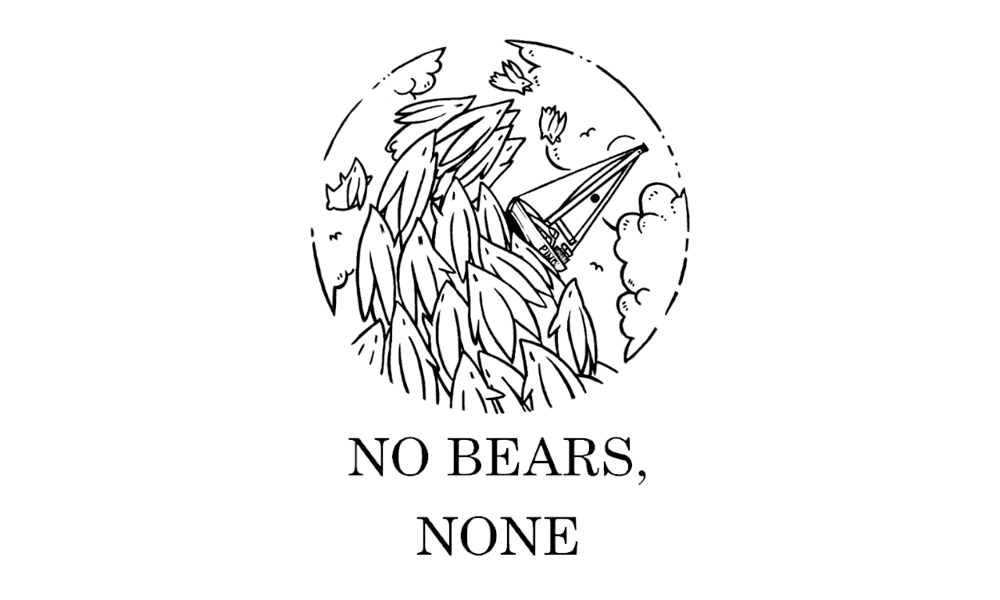
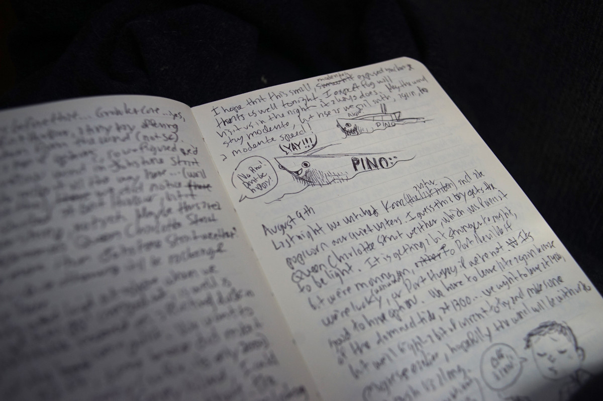
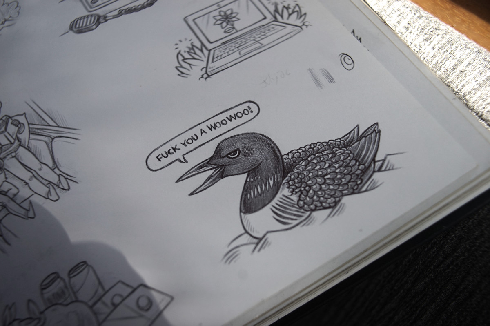

no bears none

No Bears, None is the revised and improved Victoria to Sitka logbook. It is 260 pages long, written in English. The book has 101 new drawings, 17 new sections on a variety of topics and 13 recipes.
In the spring of 2024, we sailed northward towards Southeast Alaska. From May 1st to August 11th, we covered 1,800 NM. The highest we sailed on this trip was 57°N, the latitude of Peril Strait near Sitka in Southeast Alaska.
We kept a logbook of daily happenings onboard, unlike Busy Doing Nothing which contained hourly logs. With No Bears, None, we occasionally combined writings from multiple days when the boat wasn't on the move. We released the unedited transcripted online, the Victoria to Sitka logbook, in the fall of 2024, and the final edited edition with a lot of additional content on May 25th 2026. The new edited edition includes the following:
- Over 100 new drawings
- 17 new sections
Galley, Take-Make-Waste, No Windlass, Foul-Weather Gear, Western Canadian Rapids, Phone Aloft, Sprouting, The Challenges of Coastal Sailing, Jellyfish, A Path to Caring, Solar Cooking, Lactofermentation, Teapot and Iggy, On Rowing a 33-Foot Boat, Staying Warm, Reycling and Garbage, and An Overreliance on Electronic Systems - 13 recipes
The first version is still available to read online, but doesn't include the newer content and revised text. Buying this book is a way to support us, we put a lot of work into it, and we hope you like it!
production
Upon our return to Victoria in the fall of 2024, after a summer spent in Northern B.C. and Southeast Alaska, we transcribed the handwritten pages of our logbook so we could publish them online.

Then, in the summer of 2026 we released an expanded and edited version as a digital book.
Like with previous published logbooks, this e-book was written in Markdown and formatted to PDF and EPUB using Tectonic and CSS via Pandoc. The first edition of No Bears, None was released on May 25th 2026. The book is open source, but buying it is a way of supporting our work. The Victoria to Sitka logbook is still online, but does not include new content.

In the fall of 2026, we plan to release a printed paperback version.
{kind=link}
{kind=link}
{kind=link}
{kind=link}